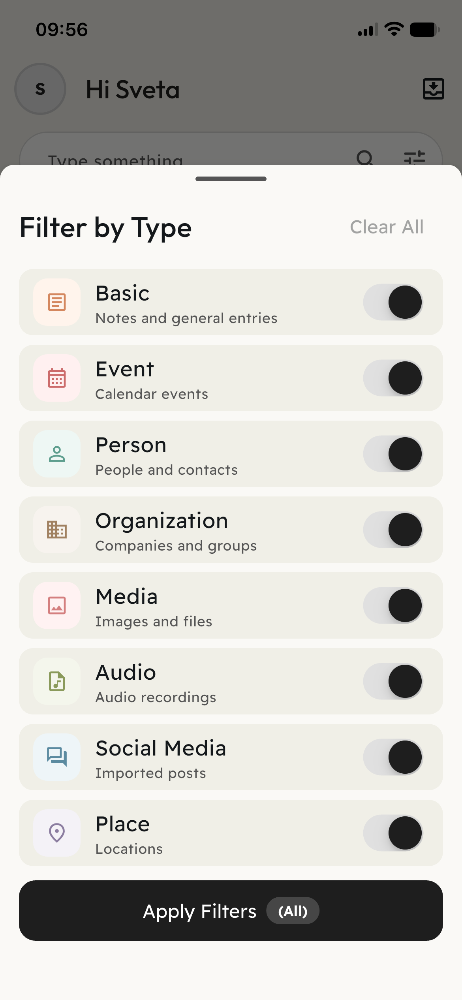

Your first trip together. A birthday in Paris. You shared those moments years ago. With SynDiary, you can bring your Facebook and Instagram posts into your own timeline and find them again.
Download your information from Facebook or Instagram, import the ZIP into SynDiary, and browse the history you've already recorded.
Almost 16 years later, Paris was there again
For me, this became personal when I found our first visit to Paris for Nikita's birthday, almost 16 years ago. I also rediscovered our first visit to Champagne, France, with Nikita's brother and his family.
Finding those moments again reminded me why we're building SynDiary. I want to be able to return to my own history, and help you do the same.
You've already recorded years of your life
Your Facebook and Instagram posts hold family visits, travels and everyday moments. SynDiary imports supported posts and media from that archive into your timeline, where you can search imported posts alongside your other entries. Not every item in a Meta archive is supported, and some media may be skipped. Keep the original archive as a separate copy and review the import results.
Your memories stay on your device by default
SynDiary processes your Meta archive on your device. Your imported history is stored locally by default, and the SynDiary team does not receive your archive. You don't need a SynDiary account to import it or use Search.
Some optional features can send information off your device. Read how SynDiary handles your data for the details.
Find a post you remember
Once the import is complete, search for a word from the text of an imported post, such as "Paris" or "Champagne". Type filters help you narrow the results.
To find imported Facebook or Instagram posts, open Filter by Type, leave only Social Media selected, then tap Apply Filters. Media is a separate category for images and files.


Try a familiar keyword to find an old memory. Large archives and older phones may take longer to load results and media.
Make room for your history
Before downloading a large archive, check your phone's free storage. Remove downloads or apps you no longer need, and keep anything important backed up. Leave room for both the downloaded ZIP and the imported content. Use Wi-Fi for the download.
Meta needs time to prepare your archive. Wait for its notification before downloading the file. SynDiary also needs time to process the import on your device, especially if you have years of posts and media.
Bring your Meta memories into SynDiary
In Meta's download options, select All available information, All time and JSON to request your full archive. Choose Download to device. When the ZIP is ready, keep it zipped.
In SynDiary, go to Settings → Import your memories. Under One-time imports, choose Facebook or Instagram to match your archive, then select the ZIP file. Enter your author name for Facebook or your username for Instagram. Review the date range and content options, then tap Start Import. Both import screens initially select the past year. Move the start date back to include older posts before you start the import.
Follow the Facebook & Instagram download guide for the full steps.
Get SynDiary, import your archive, and search for a place or moment you'd love to revisit.